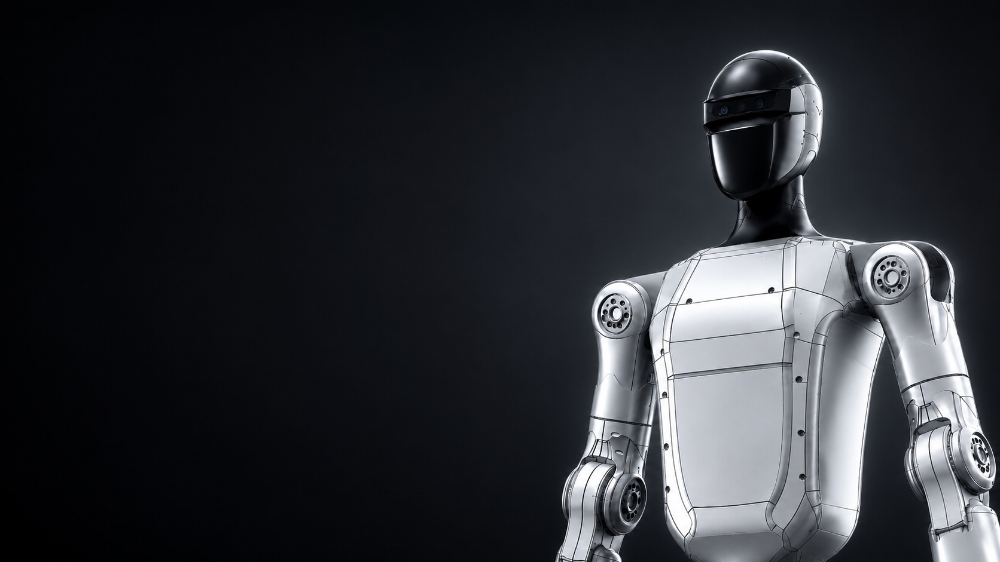
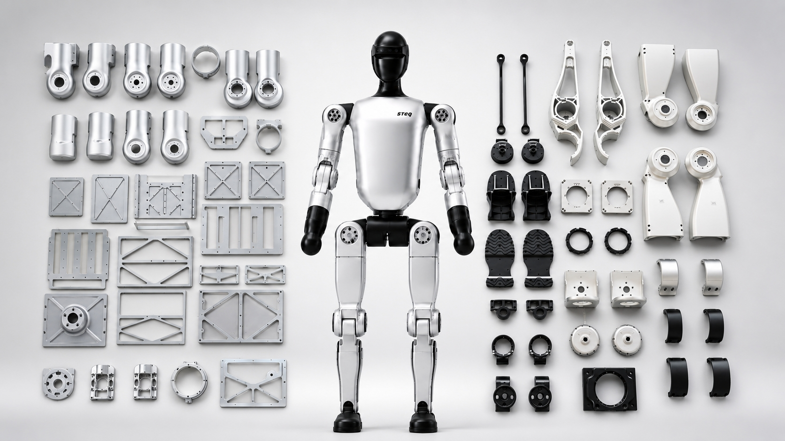

定位为运动控制与整机工程闭环验证平台。已完成从结构、电气、软系统到 RL/模仿学习的真机部署完整链路验证。
从 Demo 走向可小批量复制、可开放接入的工程化平台。重点验证供应链、自研关节与有限销售能力。

从结构设计、线束布局到主控系统。真正的可靠性，不来自简单堆叠，而是长期调试和工程准则沉淀。
围绕电机延迟、控制频率和真实执行器特性建模。目标是让策略能极其稳定地进入真实机器人。
成熟的 RL 与模仿学习部署流程，将动作数据、训练策略和真机运行连接，形成持续迭代体系。
软件系统支持快速适配不同电机与构型，减少重复开发和长周期现场调试，奠定后续平台基础。
部署动作需要数字模型、系统识别、实时通信和真机日志的精密配合。我们正在构建一套可复用的链路，让能力可持续迭代。
为高校、实验室提供真实机器人平台，用于课程教学与前沿算法验证。
为具身智能算法团队提供真实本体，支持 VLA 及策略模型的真机验证。
为科技展厅、品牌活动和高端商业空间提供具备未来感的展示平台。
参与具身智能产业示范、科技创新展示和区域机器人生态建设。
联系我们探讨合作
contact@gmail.com